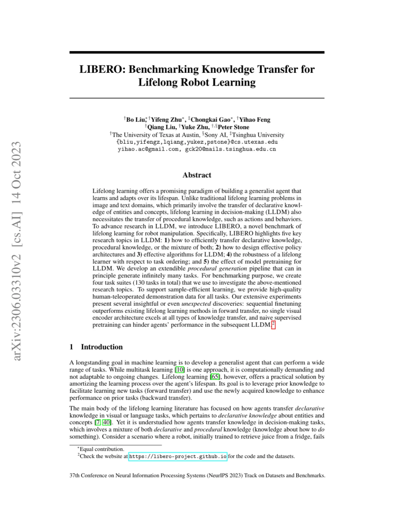
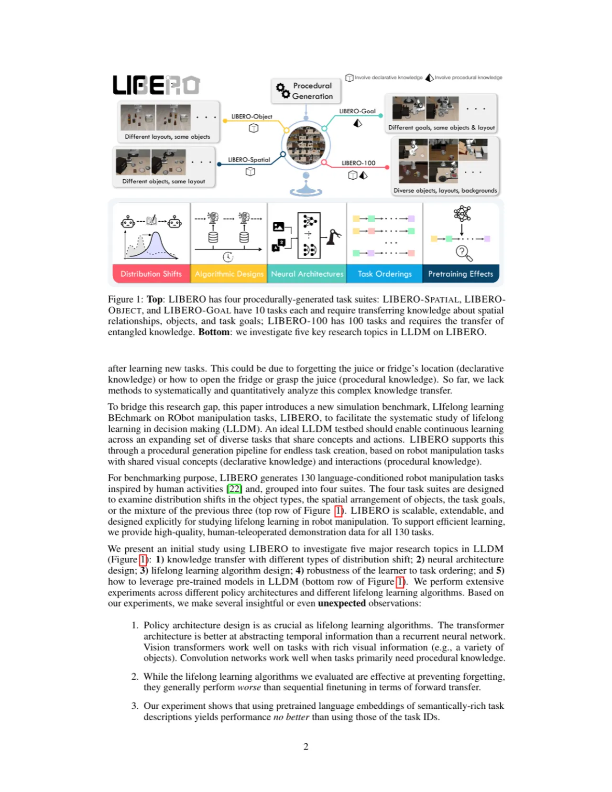
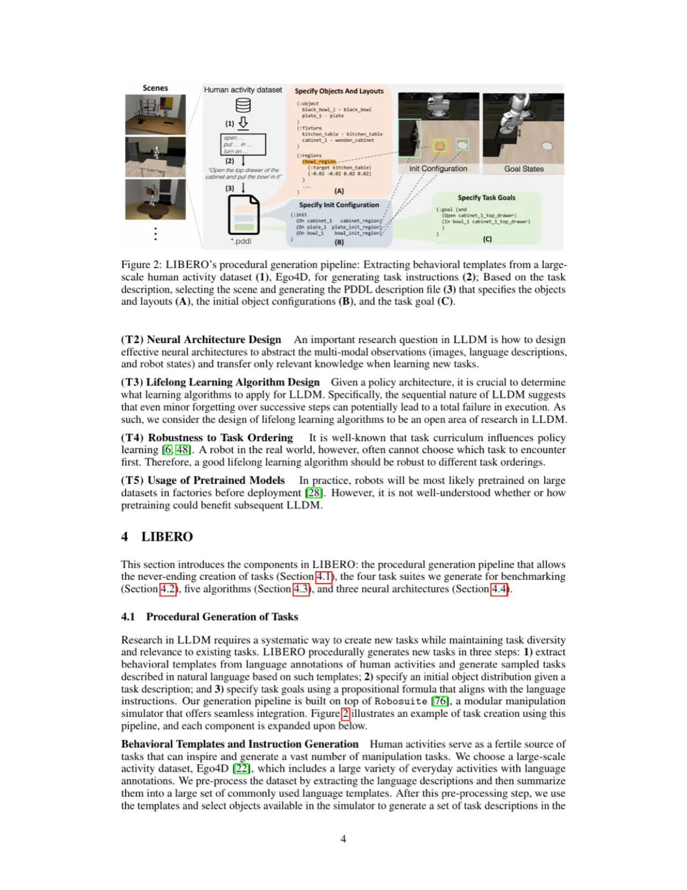
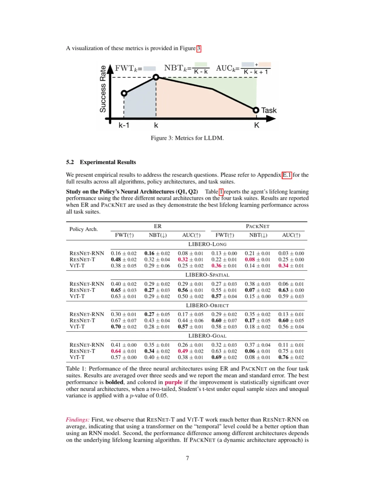
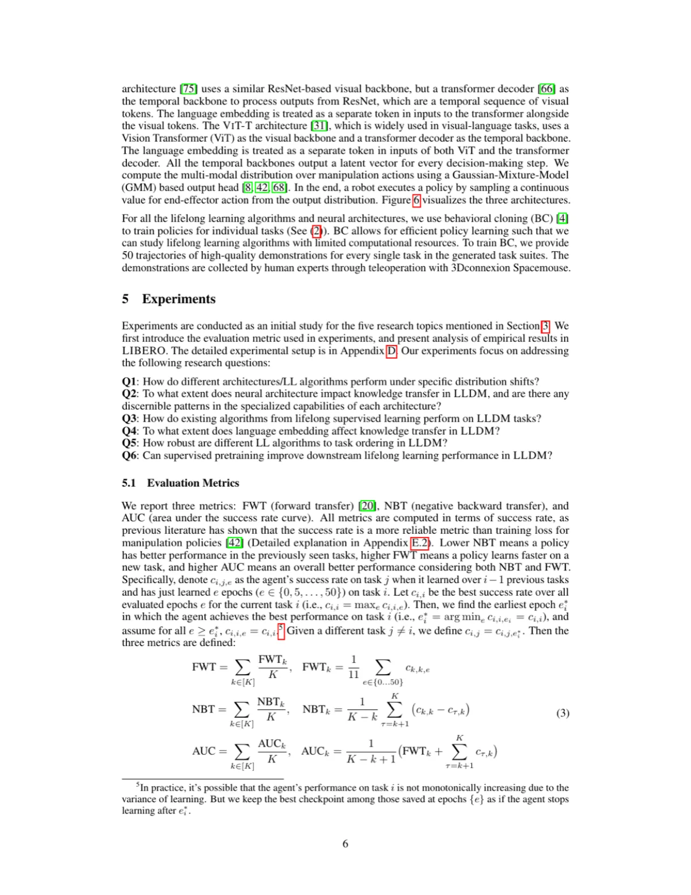
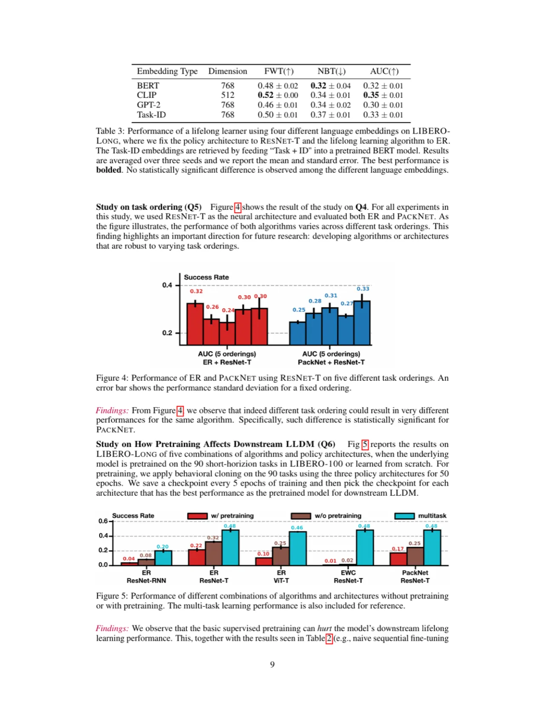

LIBERO 是首个专注于机器人操作领域终身学习的综合性基准，包含 130 个跨越四个任务套件的操作任务，系统研究陈述性知识（概念）与程序性知识（动作）的迁移效率，并附有高质量人类遥操作演示数据。
终身学习（Lifelong Learning）的目标是构建一个能够随时间持续学习、不断从新任务中积累并迁移知识的智能体。然而，现有研究几乎全部集中在视觉和语言领域，对机器人决策场景的专注极度缺乏，导致缺少系统性评测手段来衡量不同知识类型的迁移效率与算法性能。
"How can a robot agent effectively transfer knowledge across its lifespan in decision-making tasks?"

机器人终身学习面临独特挑战：与视觉分类不同，操作任务需要同时处理陈述性知识（识别物体、场景等概念）和程序性知识（如何操作、抓取等动作序列）。例如，一个机器人曾学会"把苹果放进篮子"，在学习新任务时，它既要记住物体概念（陈述性），又要保留操作技能（程序性）。现有终身学习基准均无法捕捉这一二元知识结构。

LIBERO 提供了完整的基准框架：程序化任务生成流程（保证任务多样性与可扩展性）、高质量演示数据、统一的评测指标体系（FWT / NBT / AUC），以及三种主流神经网络架构的全面对比。

10 个任务，固定物体种类，改变空间关系（如"碗在架子的左/右侧"）。主要挑战：陈述性知识迁移——智能体需记住物体位置概念。
10 个任务，固定空间布局，改变物体种类（如不同食物）。主要挑战：陈述性知识迁移——智能体需识别新物体而不遗忘旧物体。
10 个任务，同一场景执行不同目标动作（如打开/关闭抽屉）。主要挑战：混合知识迁移——既需更新目标概念，又需习得新动作策略。
10 个任务，每个任务包含多个子目标的长序列操作（平均约 90 步）。主要挑战：程序性知识迁移——习得并保留复杂动作序列。


实验系统性对比了四种 Task Identifier 嵌入方式：BERT（通用预训练语言模型）、GPT-2（自回归语言模型）、Task ID（one-hot 任务编号）、以及 Sentence Transformer。这些嵌入被用于将任务语义信息注入策略，帮助网络区分不同任务。
在 LIBERO 的四个任务套件上，对比 Sequential Finetuning（ER / 无回放）、PackNet、以及多任务学习（MTL）等算法，结合 ResNet+RNN 与 PackNet 两种主要架构，系统评估 FWT、NBT 和 AUC@7 三项指标。
主要发现："No single visual encoder architecture excels across all knowledge transfer types." ResNet 在大多数任务套件中优于 ViT-T，但对于以程序性知识迁移为主的 LIBERO-Long，ViT-T 表现更佳，体现了其对长序列时序建模的优势。
| Policy Arch. | LIBERO-Spatial (AUC@7) | LIBERO-Object (AUC@7) | LIBERO-Goal (AUC@7) | LIBERO-Long (AUC@7) |
|---|---|---|---|---|
| ResNet+RNN (ER) | 0.84 ± 0.01 | 0.60 ± 0.02 | 0.41 ± 0.02 | 0.15 ± 0.01 |
| ViT-T (ER) | 0.78 ± 0.01 | 0.48 ± 0.02 | 0.29 ± 0.01 | 0.29 ± 0.02 |
| ResNet+RNN (MTL) | 0.88 ± 0.00 | 0.66 ± 0.01 | 0.52 ± 0.02 | 0.16 ± 0.01 |
| ViT-T (MTL) | 0.80 ± 0.01 | 0.54 ± 0.02 | 0.36 ± 0.02 | 0.38 ± 0.03 |
核心发现："Sequential finetuning outperforms existing lifelong learning methods in forward transfer." 在 FWT 指标上，简单的 Sequential Finetuning（顺序微调）普遍优于 PackNet 等专门的终身学习算法，而 PackNet 通过网络二值化压缩有效抑制了遗忘（较低的 NBT），但以牺牲前向迁移能力为代价。

实验表明："Naive supervised pretraining can hinder agents' performance in the subsequent LLDM." 在大规模离线数据集上进行监督式预训练后，智能体在后续 LLDM（Lifelong Learning for Decision-Making）阶段的表现反而下降，说明纯监督预训练会干扰策略在终身学习场景下的适应能力，这是一个出人意料的负面迁移现象。
实验对比了四种任务标识符嵌入方式（BERT / GPT-2 / Task ID / Sentence Transformer）。结果表明 BERT 和 Task ID 嵌入在大多数任务套件上表现相当甚至更优，而 Sentence Transformer 嵌入表现出对语义任务描述的更好利用，尤其是在 LIBERO-Goal 中。
LIBERO 完全基于 MuJoCo 仿真环境，所有任务和演示均在仿真中完成。尽管提供了高质量的视觉渲染，但仿真物理特性与真实机器人操作存在显著差距（接触力学、物体材质变形等），所得结论是否可直接迁移到真实硬件仍是未解问题。
当前每个套件仅包含 10 个任务，总计 130 个任务。尽管程序化生成流程理论上可创建无限任务，但实际基准中的任务多样性和规模与真实终身学习场景（可能涉及数百至数千个任务）仍有差距。论文指出可通过扩展模板库来缓解此问题。
实验发现监督式预训练会降低后续终身学习性能，这一反直觉现象论文仅记录了结果（"naive supervised pretraining can hinder agents' performance"），但未深入分析其内在机制——究竟是特征分布偏移、优化景观改变还是其他原因导致了这一负迁移，有待进一步研究。
LIBERO 当前评测的算法（ER、EWC、PackNet、AGEM 等）主要为判别式确定性策略，未涵盖基于扩散模型（Diffusion Policy）或能量模型的概率性策略，也未评测近年兴起的 VLA（Vision-Language-Action）大模型在终身学习设定下的表现。